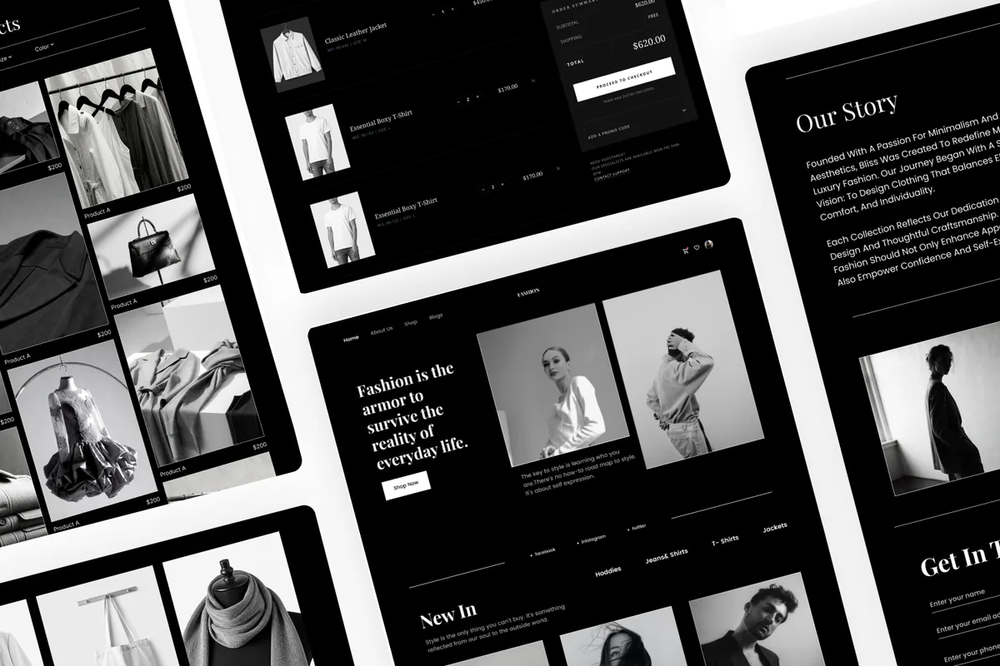

FASHION COMMERCE · EDITORIAL DISCOVERY
Atelier
A fashion commerce concept where editorial expression creates desire without hiding the shopping path.

What I owned, chose, traded off — and what is still unknown
A recruiter-scan summary derived from the public case source. Unknowns stay explicit instead of being converted into team, stakeholder, failure or outcome claims.
UI/UX Designer
Independent project; no separate PM, engineering or stakeholder team is documented in this public case.
NOT EXPLICIT — the case describes the solution, but the governing product or technical constraint is not isolated as a decision input.
NOT DOCUMENTED — the selected direction is visible, but a verified alternative set is not recorded.
NOT EXPLICIT — implemented direction exists, but the case does not yet isolate one decision and its rationale.
NOT DOCUMENTED — no verified downside or cost of the selected direction is stated explicitly.
Implementation reality: Implemented prototype. No verified engineering-collaboration record is present in this public case.
Local component, state or system implications are documented in the case; downstream production impact is not measured.
NOT AVAILABLE — no verified failure, rejected release or project pivot is documented in this public case.
PLANNED / NOT MEASURED. Baseline: Needs first usability benchmark.
Run the first benchmark against the predefined A26 target; if the threshold is missed, revise the selected model before adding more polish or scope.
What I designed — and what this project is
Atelier is a self-initiated, implemented fashion-commerce prototype. I owned the UI/UX direction, responsive interface design, information hierarchy and front-end implementation. The design problem was not “make a luxury fashion site”; it was balancing expressive brand storytelling with product discovery, variant confidence and transactional clarity.
Editorial should support the decision, not compete with it
Fashion interfaces often drift toward one of two extremes: a product grid with little point of view, or a campaign-like surface that makes practical shopping tasks hard to find. I treated editorial content as an entry layer, then progressively increased product and transactional detail as intent became stronger.
Establish collection point of view and seasonal identity.
Move from brand mood into New In and collections without ambiguity.
Bring size, color, inventory and delivery information into the decision.
Keep transaction states calmer and more explicit than campaign surfaces.
The visual system carries two modes without becoming two products
Editorial rhythm
Large image moments establish the collection, while typography and whitespace create a controlled luxury cadence.
Commerce hierarchy
Product surfaces deliberately become denser as the user moves closer to a purchase decision.
Responsive intent
Mobile keeps the product route and actions legible instead of simply shrinking the desktop composition.
What the implemented prototype demonstrates
The current build demonstrates a coherent path from brand entry to product discovery and shopping actions, with the visual language preserved across responsive surfaces. It is evidence of design craft and implementation, not evidence of commercial performance.
No analytics, moderated usability recordings or purchase data were produced for this independent concept. A next validation round should test product findability, editorial-versus-product comprehension, variant confidence and completion of the intended mobile shopping path.
Expression becomes stronger when hierarchy is disciplined
The useful lesson was not “minimalism looks premium.” It was that expressive art direction needs a stricter interaction hierarchy than a neutral interface. The next iteration should concentrate on product detail and checkout, where emotional confidence must convert into practical confidence around size, material, availability, delivery and returns.
Success criteria before success claims
≥ 4/5 participants find a suitable product and reach the intended purchase path without moderator help. This is a decision threshold for future validation, not a measured outcome.